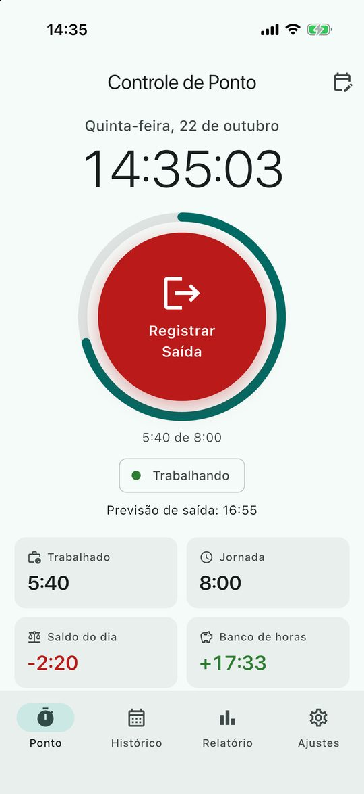
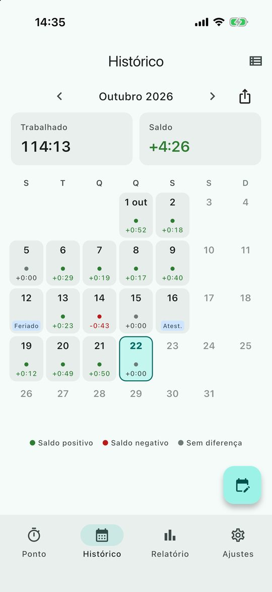
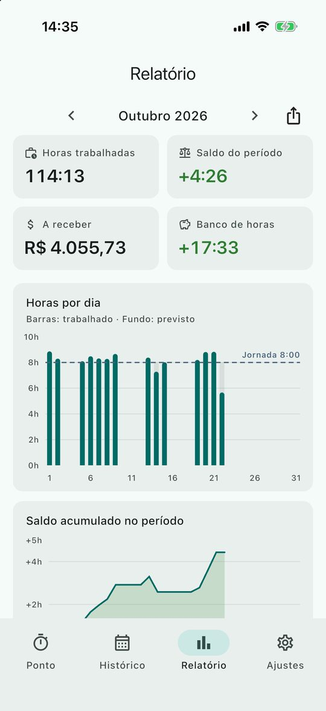
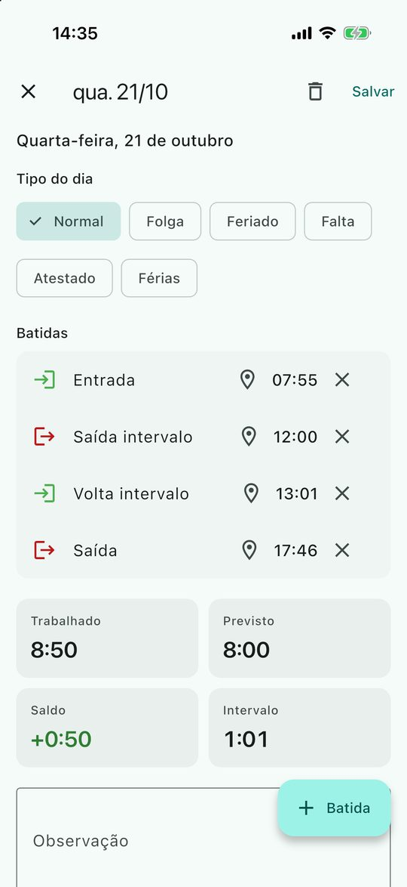

O que o app faz
Suporte e perguntas frequentes
Esqueci de bater o ponto. Como corrijo?
Na tela de Ponto, toque no ícone de calendário no canto superior (ou em Histórico, toque no dia). Ali você adiciona, muda ou remove batidas e escolhe o tipo do dia.
Trabalho à noite e passo da meia-noite. Funciona?
Sim. A saída depois da meia-noite conta no dia em que o turno começou. Ao lançar à mão, marque "Dia seguinte (turno noturno)".
Como funciona o banco de horas?
A cada dia o app compara o trabalhado com a jornada que você definiu em Ajustes. A diferença vai para o banco. Dentro da tolerância (10 minutos, por padrão), o dia conta como zero. O dia de hoje só entra no banco quando a jornada é fechada.
O aviso de chegada ou saída do trabalho não aparece.
- Em Ajustes → Localização, confira se o local de trabalho está definido e o aviso está ligado.
- Permita a localização "Sempre" (iPhone) ou "Permitir o tempo todo" (Android) e as notificações do app.
- No Android, tire o app da economia de bateria, se o celular tiver essa opção.
- O sistema pode levar alguns minutos para perceber a entrada ou a saída.
Vou trocar de celular. Como levo meus registros?
Em Ajustes → Dados, toque em "Exportar backup" e guarde o arquivo (e-mail, Drive, iCloud). No celular novo, use "Restaurar backup" e escolha o arquivo.
Onde ficam meus dados?
Somente no seu celular. O app não tem conta nem servidor. Veja a política de privacidade.
O app substitui o ponto da empresa?
Não. É uma ferramenta pessoal para você acompanhar a sua jornada. O registro oficial continua sendo o sistema da sua empresa.